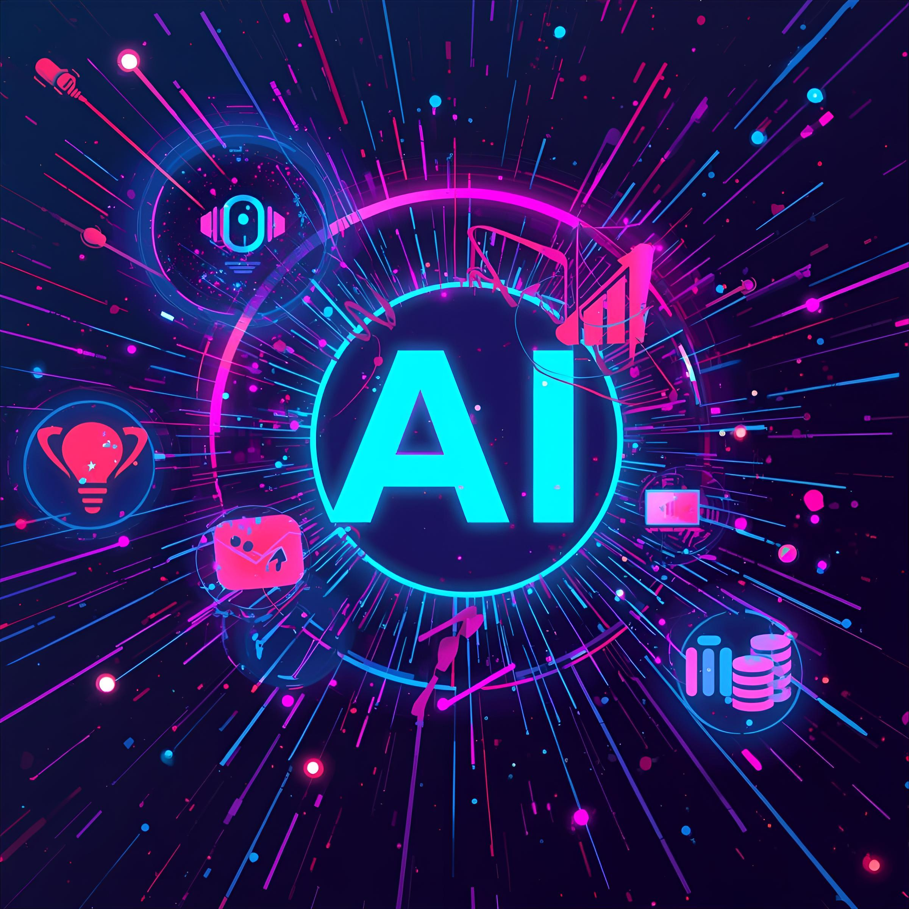
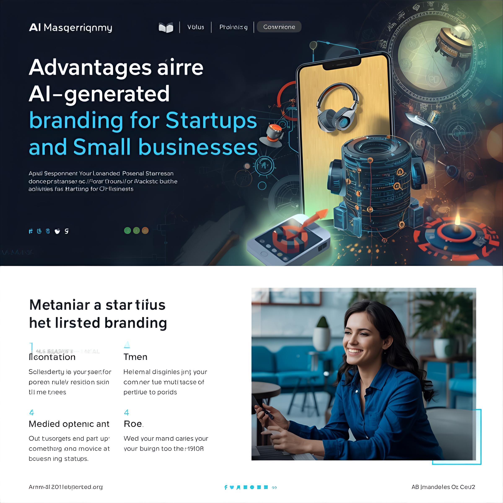

In a world where attention is the most valuable currency, brands can’t afford to simply be visible — they need to be memorable, adaptive, and authentic. LuminaBrand was born with that mission: to merge the power of Artificial Intelligence with strategic
creativity to help startups transform bold ideas into brilliant brands. Our approach blends advanced algorithms, real-time trend analysis, and human storytelling to craft living digital identities that evolve with the market. For us,
branding is more than a logo or a slogan. It’s an intelligent ecosystem that connects a company’s vision, values, and voice with the right audience, at the right moment. Whether you’re launching your startup, repositioning your digital
presence, or building an innovative brand narrative, LuminaBrand is your tech-powered partner — lighting the path to a future where your business stands out and stays unforgettable.
Generate an AI image of a vibrant social media post showcasing the power of AI branding for businesses.

Why Businesses Should Embrace AI-Powered Branding to Stay Competitive
In today’s fast-paced digital landscape, businesses face an unprecedented challenge: standing out in a market that grows more crowded by the day. Traditional branding methods, while still valuable, often fall short when it comes to agility,
personalization, and scalability. This is where AI-powered branding steps in, offering businesses a competitive edge that can redefine their presence in the market.
Speed and Efficiency
AI tools can generate high-quality branding elements—from logos to messaging—in a fraction of the time it takes traditional design processes. This means businesses can iterate, refine, and launch campaigns faster than ever before. In competitive industries,
speed can make the difference between being a leader or a follower.
Consistency Across All Platforms
A cohesive brand identity is critical for building trust with customers. AI ensures that logos, color schemes, typography, and tone of voice remain consistent across websites, social media, and marketing materials. This consistency reinforces brand recognition
and helps businesses appear more professional and reliable.
Personalization at Scale
One of AI’s most powerful advantages is its ability to analyze consumer data and deliver personalized experiences. With AI-powered branding, businesses can tailor messaging, visuals, and even product recommendations to resonate with specific audiences.
This kind of personalization not only increases engagement but also strengthens customer loyalty.
Data-Driven Creativity
AI doesn’t just automate processes—it enhances creativity. By analyzing market trends, customer behaviors, and industry insights, AI can suggest designs and strategies that are both innovative and effective. This fusion of data and creativity empowers
businesses to make smarter branding decisions backed by evidence, not guesswork.
Cost-Effective Innovation
Hiring a full design team or agency can be costly, especially for small and medium-sized businesses. AI-powered branding services offer a cost-effective alternative without compromising quality. Businesses can access professional-grade design and strategy
at a fraction of the traditional cost, making innovation accessible to everyone.
Final Thoughts
The marketplace of tomorrow will be dominated by brands that embrace technology to stay ahead. AI-powered branding is not just a trend—it’s a strategic necessity. By leveraging AI, businesses can ensure they are not only keeping up with competitors but
also setting the pace for what’s next in their industry.
If your business wants to elevate its brand, reach customers more effectively, and future-proof its identity, now is the time to explore AI-powered branding services.

Subject: Elevate Your Brand with the Power of AI
Hi Michael jackson, I hope this message finds you well. I wanted to share an exciting opportunity that could significantly enhance your business’s visibility and impact: AI-powered branding. In today’s fast-moving market, a strong, consistent brand presence
is more important than ever.
With AI-driven tools, we can create branding that not only looks professional but also resonates deeply with your target audience. Here’s how it can help your business stand out: Faster, smarter design: AI generates logos, visuals, and messaging concepts
in minutes, giving you more time to focus on strategy and growth. Consistency across platforms: From social media to websites to print, AI ensures your brand identity remains sharp and cohesive everywhere your audience encounters you.
Data-driven creativity: AI analyzes trends and audience preferences, helping us craft branding that’s not just attractive but also effective in driving engagement and conversions. Cost-effective innovation: You get high-quality creative
output at a fraction of traditional design costs, without compromising on originality or impact. With the right AI-driven branding strategy, your business can project a stronger identity, connect more authentically with customers,
and stay ahead of competitors who are still relying solely on traditional methods. I’d love to discuss how we could tailor this approach to meet your goals. Would you be open to a brief call next week to explore possibilities? Looking
forward to your thoughts.
Best regards, Leonilde da silva mendes Elevate +244 939947819